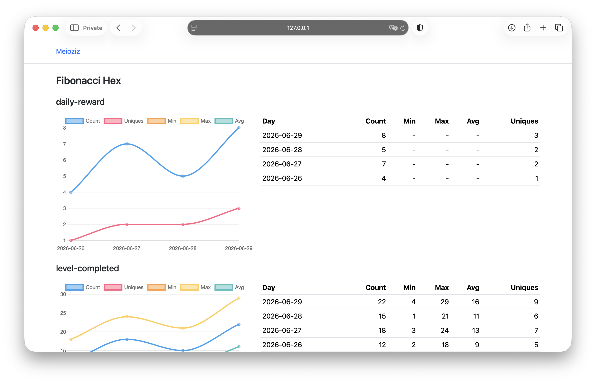

Simple self-hosted analytics for your games and apps. It lets you know whats happening in your app.
Collects product events, stores everything itself. No spying or sending info to the third parties. Your app – your data.
View on GitHub
Any facts happened in your app. You can attach an integer value to it.
You do not need any external SDK. Meioziz tracks tiny events, not users
No user or devices profiles by default, no cross-app tracking, no geo, cellular or personal data. You can add optional install ID to the event, Meioziz treats it as an app-provided identifier, not a user account or advertising profile and uses them to calculate unique events.
Meioziz is intentionally small and focused.
No client library is required. If your app can send an HTTP request, it can send an event to Meioziz
Send analytics in the background and keep it outside the user flow. The app should not wait for the event request to finish (fire and forget).
POST /v1/event
{
"app": "my-game",
"code": "daily-reward-received",
}It is not a product analytics platform. Server collects events, aggregates them into daily statistics and shows the result. It does less on purpose.
curl -X POST https://your-server.example/v1/event \
-H 'Content-Type: application/json' \
-d '{"app":"my-game","code":"daily-reward-received"}'
import 'dart:async';
import 'dart:convert';
import 'package:http/http.dart' as http;
const endpoint = 'https://example.com/v1/event';
void track(String code, {int? value, String? installId}) {
unawaited(_send(code, value: value));
}
Future _send(
String code, {
int? value,
}) async {
final event = {
'app': 'my-game',
'code': code,
if (value != null) 'value': value,
};
try {
await http
.post(
Uri.parse(endpoint),
headers: {'Content-Type': 'application/json'},
body: jsonEncode(event),
)
.timeout(const Duration(seconds: 2));
} catch (_) {
// Analytics should not affect the application flow.
}
}
Meioziz is an open-source, self-hosted event statistics server for apps and games. It collects small product events, stores them locally and turns them into daily aggregates.
Yes. You can build the app from sources or get a binary and run it on your server.
It is an optional app-provided installation identifier. Meioziz uses it to calculate "uniques" aggregate for an event type, it shows how many unique installations have sent this event.
Yes. You can use it as you like. It's licensed under Apache-2.0 license.
As to 0.9.0 version: events are deleted after the aggregation, that means that tomorrow they will be gone. Daily aggregates are not deleted from the database. Dashboard shows data for the previous 28 days.
Not yet. I am considering it and would like to understand whether there is real interest. Let me know on GitHub .